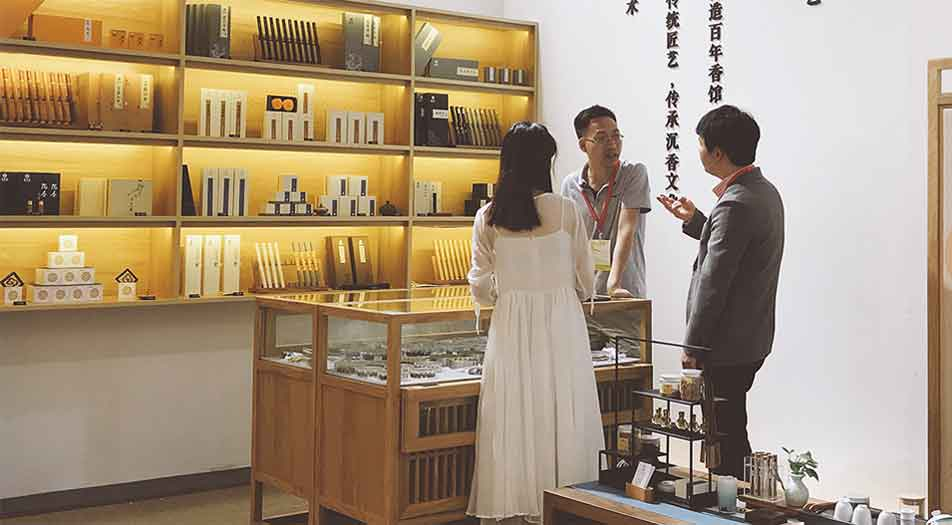

2018中国厦门国际佛事用品(秋季)展览会
2018年10月18日，全球瞩目的“2018中国厦门国际佛事用品(秋季)展览会”隆重启幕。17个国家和地区的20万采购客商云集鹭岛，佛雕佛像、香品香具、法器法物、禅意家居、禅艺装饰、艺术设计、生活美学，佛系用品应有尽有。
据悉，本届秋展规模依然稳居全球第一，涵盖了佛雕佛像、香品法器、佛教生活用品、寺院建筑装饰、禅文化产品等。在佛事展十三年的发展中，形成了“规模大、品类全、档次高”的良好口碑，吸引全国各地乃至日本、韩国、加拿大、马来西亚、印度、澳大利亚等国家和地区1126家企业参展，被盛赞为“全球佛事用品专业贸易平台”。，将给现场客商带来不一样心境感受。

组委会不断优化空间布局，根据佛事用品行业主要品类，规划十大展区，在展馆内划分展示区块，方便客商观众根据自身采购需求快速定位、集中选购，使“一站式”采购更加便捷、高效。据统计，每年厦门佛事用品秋季展参观客商超过20万人次，来自海内外17个国家和地区。随着展会影响力的逐年扩大，厦门佛事用品展已成为从业者们探讨互鉴、工艺切磋、理念创新的重要交流平台。每年的厦门佛事用品展，涌现出越来越多的精湛技法和新锐设计，不断引领中国佛事用品行业的新发展。
本届秋展，无论是宏伟庄严的佛造像还是精美雅致的佛教工艺品，无一不体现着参展企业的巧思用心。在注重传统工艺传承的同时，巧妙地融合现代美学艺术和风格设计，呈现了当今中国佛教用品工艺发展的高超水平。同时，展台的设计上也从早期的简单陈列，走向注重营造意境空间的人文美，令人耳目一新。铺页面，让参展客商随时随地进行贸易，满足全年不间断的采购需求。从展前宣传到展后客户维系，全流程都能在线完成。目前已有数百家企业注册小程序“佛贸通”，这将为参展商带来更长远的发展，创造更多的商业机会。
随着展会国际知名度和品牌影响力的提升，越来越多的境外企业前来参加，促进了各国佛教文化的友好交流和往来。本届展会国际展区面积新增了20%，来自日本、韩国、加拿大、印度、澳大利亚、马来西亚等国展商共聚一堂，带来了不同工艺、不同风格的佛像佛龛、製瓦、铜器、香品香器和当地传统文化商品，让观众感受到多元佛教文化的艺术魅力。其中更有专注佛事用品制造百年老店亮相，相信那些经过历史沉淀的器物美，将给现场客商带来不一样心境感受。
本届厦门佛事展，还有一个亮点：佛事用品行业与移动互联网结合，官方微信小程序全面上线，让广大参展企业在传统实物展示外，更添加了精美的线上展示。小程序“佛贸通”与线下佛事用品展互为补充，无需下载及安装，在微信上即可形成丰富的店铺页面，让参展客商随时随地进行贸易，满足全年不间断的采购需求。从展前宣传到展后客户维系，全流程都能在线完成。目前已有数百家企业注册小程序“佛贸通”，这将为参展商带来更长远的发展，创造更多的商业机会。
与本届佛事展同期举办的，还有两个大型展会：“第十届中国厦门国际素食暨有机产品(秋季)展览会”和“2018中国厦门国际茶产业(秋季)博览会”。三展同期，展览总面积达18万平方米，预计为期五天的展会将迎来海内外观众逾20万人次。观众在选购设计精美的佛具展品的同时，还能尝到精